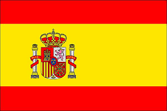
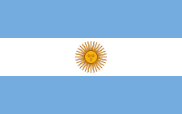
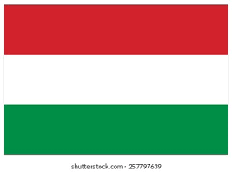
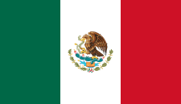

Les meilleuers buteurs:
| Classement |
Joueur |
Nationalité |
Ans |
Ligue |
Coupe |
Europe |
Autre |
Totale |
| 1 |
Cristiano Ronaldo |
 |
2009–2018 |
311(292) |
22(30) |
105(101) |
12(15) |
450(438) |
| 2 |
Raùl |
 |
1994_2010 |
228(550) |
18(37) |
66(132) |
11(22) |
323(741) |
| 3 |
Alfredo Di Stéfano |

| 1953-1964 |
216(282) |
40(50) |
49(58) |
3(6) |
308(396) |
| 4 |
Karim Benzema |
|
2009-present |
209(404) |
21(44) |
64(116) |
9(23) |
303(587) |
| 5 |
Satillana |
|
1971-1988 |
186(461) |
49(84) |
47(87) |
8(13) |
290(645) |
| 6 |
Ferenc Puskàs |
 |
1958-1966 |
156(180) |
49(41) |
35(39) |
2(2) |
242(262) |
| 7 |
Hugo Sànchez |
 |
1985-1992 |
164(207) |
19(32) |
23(39) |
2(4) |
208(282) |
| 8 |
Francisco Gento |
|
1952-1970 |
126-428 |
22(74) |
30(95) |
4(4) |
182(601) |
| 9 |
Pirri |
|
1964-1979 |
123(417) |
25(67) |
23(75) |
1(2) |
172(561) |
| 10 |
Emilio Butragueño |
|
1983-1995 |
123(341) |
16(39) |
27(75) |
5(8) |
171(463) |